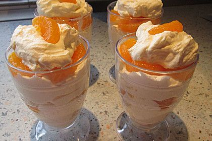

Schnelle Desserts: 15 einfache Nachtisch-Rezepte | GLAMOUR
2021.06.21 14:29
Mode Beauty Frisuren Lifestyle Shopping-Week Liebe Stars Shop Abo DEIN WARENKORB IST LEER Leg los und fülle deinen Warenkorb mit der neuesten Must-haves unserer Redaktion.
Produkte Shoppen Newsletter Suche Mode Beauty Frisuren Lifestyle Shopping-Week Liebe Stars Shop Gewinnspiele Horoskope Magazin Mehr von GLAMOUR Glamour Shopping App Glamunity © Getty Images
Schnelle Desserts: Rezepte 2020
Schnelle Desserts: 15 einfache Nachtisch-Ideen zum Nachmachen
von Larissa Weiss Senior Lifestyle Editor & Content Manager 26. März 2021 Für leckere Desserts haben wir immer ein Plätzchen im Bauch. Allerdings sollte die Nachspeise nicht nur gut schmecken, sondern natürlich auch schnell zuzubereiten sein. Daher zeigen wir die besten Dessert-Rezepte, für die man nur wenige Minuten braucht – mit Schokolade, Mascarpone, Quark & Co.! Inhaltsverzeichnis Schneller Nachtisch: Rezepte für jeden Geschmack im ÜberblickSchnelle Desserts mit Mascarpone: Ideen & Rezepte
Schnelle Desserts mit Schokolade: Ideen
Schnelle Desserts im Glas mit Joghurt: Ideen
Schnelle Desserts mit Eis: Rezepte & Tipps
Party-Nachspeisen-Tipps: Schelle Desserts für viele Leute
Wir alle kennen die Situation: Man lädt Freunde oder Familie zu sich nach Hause zum Essen ein und freut sich, wenn man endlich das Kochen hinter sich und nichts verbrannt oder versalzen hat. Und dann fällt einem plötzlich ein: Eine Nachspeise muss es ja auch noch geben! Kommt euch das bekannt vor? Falls ja: Keine Panik, denn es gibt genügend schnelle Desserts , die man auch spontan noch zubereiten kann. Selbstverständlich gibt es auch jede Menge schnelle Desserts zum Vorbereiten – so spart man sich den ganzen Stress und kann den Abend mit seinen Liebsten einfach genießen.
Vor allem online findet man mittlerweile richtig viele und gute Dessert-Rezepte – etwa bei Pinterest, Instagram oder auf Food-Blogs. Schnelle Desserts mit wenig Zutaten eignen sich natürlich besonders, kosten sie noch weniger Zeit und sind auch für Hobby-Köche leicht nachzumachen – vor allem dann, wenn man sie für viele Leute vorbereiten muss.
Wir zeigen die besten Nachtisch-Rezepte – egal ob Mousse, Pudding, Himbeer-Sorbet, Quark oder Eis!
Dalgona Kaffee-Rezept
Trend-Drink der Stunde: Dalgona Kaffee ganz einfach selbst zubereitenDalgona Kaffee ist innerhalb von fünf Minuten fertig, besteht aus nur drei Zutaten und ist pervers fotogen
Mehr lesen
Schneller Nachtisch: Rezepte für jeden Geschmack im Überblick
Schnelle Desserts mit Mascarpone: Ideen & Rezepte
Mascarpone-Creme mit Brombeeren
Zutaten (für vier Portionen):
500 g Mascarpone 300 ml Schlagsahne 6 EL Zucker 300 g Tiefkühl-Brombeeren 300 g frische Brombeeren 80 g Butter 20 Butterkekse 2 Vanilleschoten frische MinzeZeitaufwand: 15 Minuten
Zubereitung: Als Erstes die gefrorenen Brombeeren mit dem Mark der Vanilleschoten und 4 EL Zucker langsam in einem Topf zum Kochen bringen (umrühren nicht vergessen!) und anschließend abkühlen lassen. Dann die Butterkekse zerkleinern und in einem anderen Topf mit geschmolzener Butter umrühren. Die Sahne steif schlagen und im Anschluss mit dem Mascarpone und dem restlichen Zucker vermengen. Jetzt müsst ihr das schnelle Dessert nur noch in Schichten (Butterkekse, Beerenmasse, Mascarpone-Creme) in Gläser füllen. Vor dem Servieren mit frischen Brombeeren und Minzblättern anrichten. Fertig!
Um diese Inhalte zu sehen, akzeptieren Sie bitte unsere Cookies.
Cookies verwaltenMascarpone-Frischkäse-Creme mit Oreo-Crumble
Zeitaufwand: 20 Minuten
Zutaten (für fünf Portionen):
125 g Mascarpone 125 g Frischkäse 250 g Quark 40 g Zucker ½ Becher Sahne ½ Packung Sahnesteif 16 Oreo-Kekse ErdbeerenZubereitung:
Als Erstes die Sahne mit Sahnesteif schlagen, bis die Schlagsahne fest ist. Dann Mascarpone, Frischkäse, Quark und Zucker in einer separaten Schüssel vermengen. Im Anschluss die Schlagsahne unterheben und noch einmal alles gut verrühren. Die Oreo-Kekse zerkleinern, bis ein Crumble entsteht. Zum Schluss das schnelle Dessert geschichtet servieren: Zuerst kommt die Crememasse, dann kommen die Kekse und zum Schluss die Erdbeerstücke. Fertig!
Um diese Inhalte zu sehen, akzeptieren Sie bitte unsere Cookies.
Cookies verwaltenRezept für Honig-Zitronen-Mascarpone-Creme mit Beeren
Zeitaufwand: 15 Minuten
Zutaten (für vier Portionen):
280 g Erdbeeren 170 g Heidelbeeren 1 Zitrone 170 g Mascarpone 170 g Griechischer Joghurt 2 EL Honig 1 TL VanilleextraktZubereitung:
Die Erdbeeren (zerkleinert), Heidelbeeren, Zitronensaft sowie Zitronenzeste in einer Schüssel vermengen. In einer anderen Bowl Mascarpone, Joghurt, Honig, Vanilleextrakt, Zitronensaft- und -zeste mixen, bis die Masse homogen und schön cremig ist. Die Mascarpone-Joghurt-Creme und den Früchtemix in Dessertgläsern schichten und servieren.
Um diese Inhalte zu sehen, akzeptieren Sie bitte unsere Cookies.
Cookies verwaltenSchnelle Desserts mit Schokolade: Ideen
Rezept für Schoko-Bananen
Zeitaufwand: 10 Minuten
Zutaten (für zehn Portionen):
5 gefrorene Bananen 100 g Zartbitterschokolade Gehackte Nüsse (z. Bsp. Haselnüsse, Pistazien, Erdnüsse usw.) Kokosraspeln ErdnussbutterZubereitung:
Die gefrorenen Bananen halbieren und jeweils einen Eisstiel reinstecken. Die Schokolade in einem Wasserbad schmelzen, anschließend in ein Trinkglas füllen und die Bananenhälften darin dippen. Danach die mit Schokolade überzogenen Bananen auf ein Backpapier legen und schnell die gewünschten Toppings (unsere Favoriten stehen oben) darüberstreuen. Schon ist das schnelle Dessert fertig!
Um diese Inhalte zu sehen, akzeptieren Sie bitte unsere Cookies.
Cookies verwaltenSchneller Nachtisch: Avocado-Schokoladen-Pudding
Zeitaufwand: 10 Minuten
Zutaten (für acht Portionen):
2 reife Avocados 170 ml Ahornsirup 2 TL Vanilleextrakt 2 TL Balsamico ½ TL Meersalz 120 g KakaopulverZubereitung:
Die Avocados mit einem Pürierstab oder Mixer pürieren, bis sie eine cremige Konsistenz erreicht haben. Die restlichen Zutaten dazugeben und alles mixen, bis eine homogene Masse entsteht. In individuellen Bowls oder Dessertgläsern servieren.
Um diese Inhalte zu sehen, akzeptieren Sie bitte unsere Cookies.
Cookies verwaltenRezept für 3-Zutaten-Schokoladen-Mousse
Zeitaufwand: 5 Minuten
Zutaten (für fünf Portionen):
3 Becher Sahne 80 g Kakaopulver 115 g Puderzucker ErdbeerenZubereitung:
In einer gekühlten Schüssel die Sahne schlagen, bis sie schaumig ist. Puderzucker und Kakaopulver (gesiebt) dazugeben und alle drei Zutaten miteinander mixen, bis die Mischung homogen und fest ist. Die Mousse in einen Spritzbeutel geben und in kleinen Gläsern servieren.
Schnelle Desserts im Glas mit Joghurt: Ideen
Rezept für Limetten-Joghurt-Pudding
Zeitaufwand: 20 Minuten
Zutaten:
3 Vollkornkekse 2 EL zerlassene Butter 1 EL Zucker 1 kg griechischer Joghurt 1 Dose gezuckerte Kondensmilch 50 ml Limettensaft 2 TL ZitronenzesteZubereitung:
Kekse zerkleinern und auf einer Backform verteilen. Den Crumble mit zerlassener Butter beträufeln und mit Zucker bestreuen. Alles mit einer Gabel gut vermengen. Den Keksteig acht Minuten im Ofen backen, bis er leicht geröstet ist (nach vier Minuten noch einmal mit der Gabel umrühren). Die Mischung aus dem Ofen nehmen und abkühlen lassen. In der Zwischenzeit die gezuckerte Kondensmilch, den Zitronensaft sowie die Zitronenzeste in einer Schüssel mit einem Schneebesen vermengen. Joghurt hinzufügen und weiterhin alles umrühren. Fertig ist der Pudding – jetzt müsst ihr ihn nur noch in Gläser füllen und mit dem Cookie-Crumble anrichten.
Um diese Inhalte zu sehen, akzeptieren Sie bitte unsere Cookies.
Cookies verwaltenRezept für Heidelbeer-Joghurt-Dessert
Zeitaufwand: 10 Minuten
Zutaten (für vier Portionen):
250 g Heidelbeeren 2 EL Zitronenzeste 1 TL Zitronensaft 50 g Zucker 300 g griechischer Joghurt 80 ml Schlagsahne 2 EL Puderzucker (gesiebt) 1 TL VanilleextraktZubereitung:
Heidelbeeren, 1 EL Zitronenzeste und 1 EL Zucker in eine kleine Pfanne geben, die Beeren leicht zerquetschen und zwei bis drei Minuten erhitzen lassen. In eine Schüssel geben und fünf Minuten im Gefrierfach abkühlen lassen. Den Rest der Zitronenzeste und des Zuckers hinzufügen. Joghurt, Schlagsahne, Puderzucker, Vanilleextrakt und Zitronensaft mit einem Schneebesen mixen. Zum Schluss die Joghurt-Creme und die Heidelbeeren geschichtet in Dessertgläser geben. Wer möchte, kann das schnelle Dessert noch mit etwas Zitronenzucker toppen.
Um diese Inhalte zu sehen, akzeptieren Sie bitte unsere Cookies.
Cookies verwaltenSchnelle Desserts mit Eis: Rezepte & Tipps
Simple Dessert-Idee: Eis-Dessert mit Äpfeln
Zeitaufwand: 20 Minuten
Zutaten (für vier Portionen):
500 ml Vanilleeis 3 Äpfel 2 EL Zucker 150 ml Apfel-Acerolasaft 50 ml Apfelbranntwein ½ TL Zimt 200 g Schlagsahne 1 Packung VanillezuckerZubereitung:
Zucker in einen kleinen Topf geben und karamellisieren lassen. Im Anschluss mit Apfelsaft und Apfelbranntwein ablöschen und alles gut verrühren. Geschälte Apfelstücke und Zimt dazugeben, rund 10 Minuten kochen und anschließend etwas abkühlen lassen. Die Sahne mit dem Vanillezucker schlagen, bis sie fest ist. Apfelkompott in Gläser geben, jeweils eine Kugel Eis und eine kleine Portion Sahne dazugeben.
Dessert-Idee: Pavlova mit Himbeeren, Pistazien und Himbeer-Sorbet
Zeitaufwand: 15 Minuten Vor- bzw. Nachbereitung + 90 Minuten Backzeit
Zutaten (für vier Portionen):
6 Eiweiß 325 g feiner Zucker 1 TL Weißweinessig 200 ml Sahne 50 g gehackte Pistazien 200 g Himbeeren 2 EL Puderzucker Himbeer-Sorbet (z. Bsp. "Grom Sorbetto al Lampone")Zubereitung:
Als Allererstes den Ofen auf 150 Grad Celsius vorheizen. Dann Eiweiß steif schlagen – sobald der Eischnee fest ist, den Zucker nach und nach hinzufügen und anschließend sechs bis acht Minuten auf höchster Stufe schlagen. Dann den Weißweinessig dazugeben und alles zwei Minuten lang schlagen. Nun kommt die Baisermasse auf ein Backblech (Backpapier nicht vergessen!), einfach die Masse darauf verteilen. Das Blech in den Ofen schieben und die Temperatur auf 120 Grad Celsius reduzieren. Nach 90 Minuten Backzeit den Ofen ausschalten und den Baisier mit geschlossener Tür auskühlen lassen. Zum Schluss die Sahne schlagen und darauf verteilen, die Hälfte der Himbeeren mit dem Puderzucker pürieren und über die Sahne träufeln, und das Ganze mit den restlichen Beeren sowie Pistazien garnieren. Was natürlich nicht fehlen darf: mindestens eine Sorbetkugel pro Portion! Tipp: Die Baisermasse schon während des Abendessens in den Ofen schieben, dann geht es ganz schnell, wenn es Zeit für den Nachtisch ist.
© Tinastausendschoen.de; GromSchnell und einfach: Vanilleeis mit heißen Himbeeren
Zeitaufwand: 10 Minuten
Zutaten (für fünf Portionen):
500 g Himbeeren 4 EL Puderzucker 4 EL Erdbeer- oder Himbeersirup 1 l Vanilleeis 1 Becher Schlagsahne Kakaopulver WaffelnZubereitung:
Die Hälfte der Himbeeren mit dem Sirup und dem Puderzucker pürieren und dann mit den restlichen Beeren in einem Topf kochen. Anschließend die Soße auf einen tiefen Teller oder in eine kleine Schüssel geben, zwei Kugeln Eis sowie eine Portion Schlagsahne dazugeben. Dann fehlen nur noch die Waffeln und der Kakaopulver und fertig ist die einfache Nachspeise!
Zum Welt-Nutella-Tag
Nutella-Schnaps: Diese 3 Rezepte sind total lecker und einfachWir zeigen drei Rezepte für Nutella-Schnaps, die perfekt für jede Party sind
Mehr lesen
Dessert-Rezept aus der Express-Küche: Apfel-Crêpes mit Eis
Zeitaufwand: 20 Minuten
Zutaten (für vier Portionen):
3/4 Tasse Weizenvollkornmehl 1 1/4 Tasse Wasser 1 Prise Salz 2 kleine Äpfel 1 Prise Zimt Öl zum Anbraten (z. Bsp. Kokosöl) Ahornsirup nach Belieben 1 Becher Eis (z. Bsp. "Breyers Spiced Cookie Dough")Zubereitung:
Mehl, Salz und Wasser in eine Schüssel geben, zu einem homogenen Teig verrühren und etwa zehn Minuten ruhen lassen. In der Zwischenzeit die Äpfel entkernen und in dünne Scheiben schneiden, diese anschließend anbraten und mit Zimt und ein bisschen Wasser köcheln lassen, bis sie weich sind. Jetzt sind die Crêpes dran: Dafür eine große, beschichtete Pfanne erhitzen und mit Öl einfetten. Einen Teil des Teigs in die Pfanne geben und diese sofort schwenken, ansonsten wird der Teig nicht so dünn wie gewollt. Von beiden Seiten kurz anbraten, bis die Crêpe goldbraun ist. Zum Schluss mit den Apfelscheiben sowie zwei Eiskugeln servieren und fertig ist das schnelle Dessert!
© Breyers | Viola Hou @thesunshineeateryParty-Nachspeisen-Tipps: Schelle Desserts für viele Leute
Rezept: "Strawberry & Cream"-Eis
Zeitaufwand: 5 Minuten
Zutaten:
Eis am Stiel (z. Bsp. "Magnum Ruby") weiße Schokolade Baiser-Drops frische oder getrockene ErdbeerenZubereitung:
Die weiße Schokolade in einem Wasserbad schmelzen lassen. Die Erdbeeren in kleine Stücke schneiden. Dann das Eis auf einen Teller legen und die geschmolzene Schokolade (am besten mit einem Löffel) darüber tröpfeln. Jetzt fehlen nur noch die Toppings: Das Eis mit den Erdbeeren sowie den Baisier-Drops dekorieren und fertig ist die wohl einfachste Nachspeise der Welt!
Um diese Inhalte zu sehen, akzeptieren Sie bitte unsere Cookies.
Cookies verwaltenNo-Bake-Cheesecake: Rezept (ohne backen!)
Zeitaufwand: 15 Minuten
Zutaten (für zehn Portionen):
225 g Frischkäse 75 g Zucker 2 EL Zitronensaft 225 g Schlagsahne 1 Packung Vollkornkekse 50 g brauner Zucker 7 EL ungesalzene Butter (zerlassen) ½ TL Zimt ¼ TL SalzZubereitung:
Frischkäse, Zucker und Zitronensaft mixen. Dann die Schlagsahne unterheben. Für den Kuchenboden die Vollkornkekse zerkleinern und mit Zucker, Zimt und Salz vermengen. Die zerlassene Butter hinzufügen und mit einer Gabel umrühren. Den Teig auf eine Kuchenplatte geben und mit den Händen ebenmäßig darauf verteilen (gut drücken!). Die Kruste mindestens eine Stunde lang abkühlen lassen, dann die Frischkäse-Mischung darauf geben und nochmals das Ganze abkühlen lassen.
Dessert-Rezept: Eis-Müsli-Cups mit Beeren (ohne backen!)
Zeitaufwand: 10 Minuten Vorbereitung + 120 Minuten einfrieren
Zutaten (für 12 Portionen):
4 EL Mandel-oder Erdnussmus 4 EL Honig- oder Reissirup 240 g Müsli bzw. Haferflocken Eis (z. Bsp. "Cremissimo Haselnuss Schokolade") Johannis- und Heidelbeeren NüsseZubereitung:
Mus mit dem Sirup in der Mikrowelle oder im Wasserbad erhitzen, bis beides flüssig ist. Danach zusammen mit dem Müsli in eine Schüssel geben und gut mischen. Anschließend die Müslimasse mit einem Löffel gleichmäßig auf sechs Muffin-Förmchen verteilen und gut andrücken. Anschließend jedes Förmchen mit Eis auffüllen. Zum Schluss mit Beeren, Nüssen & Co. bestreuen, mit einer Alufolie abdecken und mindestens zwei Stunden einfrieren. Lecker!
© PRRezept: Schoko-Nuss-Trauben
Zeitaufwand: 10 Minuten
Zutaten (für zehn Portionen):
10 kernlose Weintrauben 100 g Schokolade (weiß oder Vollmilch) 80 g Haselnüsse (gehackt)Zubereitung:
Die Schokolade in einem Wasserbad schmelzen. Die Trauben jeweils aufspießen und diese in die geschmolzene Schokolade dippen. Jetzt muss man sie nur noch in die Haselnüsse dippen und schon ist das schnelle Party-Dessert fertig! Am besten serviert man diese Nachspeise auf einem großen Teller, sodass sich jeder Gast nach Lust und Laune die Traubenspieße holen kann.
Um diese Inhalte zu sehen, akzeptieren Sie bitte unsere Cookies.
Cookies verwaltenEinfach und lecker
Kuchen im Glas: Die 8 besten Rezepte – mit Nutella, Oreo & Co.So gelingen die kleinen Kuchen garantiert!
Mehr lesen
Viraler Food-Trend auf TikTok
Baked Oats sind die perfekte Alternative zu Porridge – das sind die 5 besten Rezepte!TikTok wird euch euren Morgen versüßen, versprochen! Dort es nämlich tolle Rezepte für Baked Oats, mit denen schlechte Laune nach dem Aufstehen im Nullkommanichts verfliegt
Mehr lesen
Rolled Ice Cream: Rezept
So kannst du Ice Cream Rolls selbst machenWir zeigen leckere Rezepte für jeden Geschmack!
Mehr lesen
Genuss FeaturesTeile den Artikel
Entdeckt im GLAMOUR ShopMarc Inbane
Marc Inbane Self Tanningspray - Selbstbräuner39,95 €
Jetzt kaufen
OHH LUILU
Medi Cuff59,00 €
Jetzt kaufen
Dr. Schedu Berlin
Dr. Schedu Keratin Kollagen Intensivkur20,00 €
Jetzt kaufen
Kess Berlin
Eyeshadow Tower29,00 €
Jetzt kaufen
Mehr von GLAMOUR20 Tage - 20 Gewinne
Das große GLAMOUR Birthday Gewinnspielvon GLAMOUR
Das perfekte Braun
Braune Haare: So findest du den Braunton, der am besten zu deinem Teint passtvon Glamour.de
Soft Tampons
Starke Softies: Deshalb wirst du diesen Sommer (und auch sonst) nicht mehr auf Soft Tampons verzichten wollenvon Sarah Thiele
Aperol-Alternative
Ciao, Aperol Spritz! Jetzt kommen diese 8 Sommer-Cocktailsvon Larissa Weiss
Kajal-Trick
Highlighter-Stift: Dieser virale Kajal lässt deine Augen sofort größer wirkenvon Melanie Paukner
In vs. out
Diese 3 Jeans-Styles sind im Sommer 2021 out – und diese 3 tragen wir stattdessenvon Alexandra Schöb
Neue Haarfarbe
Stefanie Giesinger ist (wieder) blond – und trägt die schönste Haarfarbe für den Sommervon Glamour.de
Modetrend Spicy Basics
Warum langweilige Mode im Sommer 2021 auf einmal angesagter denn je istvon Glamour.de
H&M Home
Die 7 schönsten Pieces unter 50 Euro aus der neuen limitierten Kollektionvon Larissa Weiss
Kleider für Hochzeitsgäste
11 festliche Sommerkleider, die perfekt für besondere Anlässe sind – ab 40 Euro geht’s losvon Alexandra Schöb
Sommerliche Drinks
Die 18 besten Cocktail-Rezepte, die perfekt für den Sommer 2021 sindvon Larissa Weiss
Beauty-Must-have
Foundation, Serum und Sonnencreme in einem! Das ist das beste 3-in-1-Produkt für den Sommervon Glamour.de
Abo Alle Themen Die Redaktion Impressum Datenschutzerklärung AGB Cookie verwalten RSS Werbung buchen Brands AD Glamour GQ Vogue